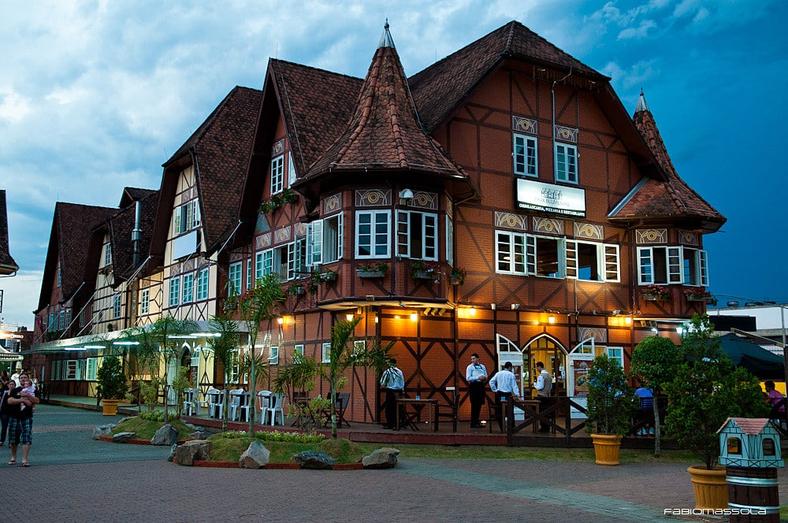

No início da colonização, a região Sul, por ser distante da capital do Brasil na época – Salvador –, não despertou interesse da coroa portuguesa. Depois, no século XVI, a ocupação iniciou-se no atual estado de Santa Catarina, destacando-se a vila São Francisco do Sul. No fim do século, em 1693, a capital paranaense, Curitiba, foi fundada.
Inicialmente, toda a região era ocupada por nativos, tendo sido os jesuítas os primeiros estrangeiros a chegar à localidade, incentivando a criação de gado e dando origem às missões com o objetivo de povoar o território e catequizar a população nativa.
No século XIX, durante o Brasil Império, foi estimulada a imigração estrangeira para garantir o desenvolvimento econômico de várias áreas do país. Na região Sul, os estrangeiros que chegavam, em sua maioria europeus, dedicavam-se à policultura, às pequenas propriedades e à criação de animais.
Os alemães foram os pioneiros, na década de 1820, colonizando áreas dos três estados sulistas. Os italianos chegaram depois e focaram sua moradia no Rio Grande do Sul, na região serrana, em cidades como Caxias do Sul e Bento Gonçalves.
No fim do século XIX, outras nacionalidades de europeus desembarcaram no sul do Brasil, dando início a uma intensa miscigenação europeia em solo brasileiro e transformando a região em um grande mosaico cultural de hábitos, costumes e alimentação da Europa.
Estados
Santa Catarina
• Região: Sul
• Florianópolis Capital
• Governo: Carlos Moisés (2019-2022)
• Área territorial: 95.346 km² (IBGE, 2019)
• População: 7.252.502 habitantes (IBGE, 2020)
• Densidade demográfica: 65,29 hab./km² (IBGE, 2010)
• Fuso: UTC-3
• Clima: Subtropical
Cultura
A cultura catarinense foi fortemente influenciada pela imigração europeia para a região. O litoral foi povoado por imigrantes açorianos e madeirenses; já o interior, por imigrantes da Europa continental. As línguas alemã e italiana são amplamente faladas no interior do estado, sendo inclusive idioma oficial de vários municípios catarinenses. Os costumes europeus também são observados nas festas típicas e nas danças folclóricas locais.
A culinária também possui forte influência da imigração, seja pela utilização de frutos do mar, no litoral, seja pelo consumo de massas, no interior. Além disso, a arquitetura, por meio do estilo enxaimel, e o artesanato, representado por peças de porcelana e cerâmica, são elementos que caracterizam a participação dos imigrantes nas diversas práticas culturais do estado.
Principais cidades
Florianópolis

Blumenau Joinville
Voltar
Paraná
• Região: Sul.
• Capital: Curitiba.
• Área territorial: 199.315 km² (IBGE, 2019).
• População:11.516.840 habitantes (IBGE, 2020).
• Densidade demográfica: 52,4 hab./km² (IBGE, 2010).
• Fuso: UTC-3.
• Clima: subtropical.
Cultura
A cultura paranaense foi fortemente influenciada pelos imigrantes que vieram para o estado em busca de melhores condições de vida. No Paraná é muito forte a presença de brasileiros originários de outros estados da federação, assim como de imigrantes europeus. As principais festas e tradições paranaenses possuem referências nas tradições europeias. Nas cidades do interior, ocorrem muitas festas em comunidades polonesas, ucranianas e alemãs.
A arquitetura, por exemplo, tem forte influência desses povos, assim como práticas de artesanato, música e dança. Já a influência de povos brasileiros está presente, em especial, na culinária, com o consumo de ervas diversas, mandioca e mel. O barreado é o prato típico da culinária paranaense, sendo resultado do cozimento de carne e temperos.
Principais cidades
Curitiba Maringá Londrina
Voltar
Rio Grande do Sul
• O estado do Rio Grande do Sul está localizado na região Sul do Brasil. A capital é Porto Alegre e a sigla é RS.
• Área: 281.737,947 km2
• Limites: O Rio Grande do Sul limita-se ao sul com o Uruguai, a oeste com a Argentina, a leste com o oceano Atlântico e ao norte com Santa Catarina
• Número de municípios:497
• População: 11,2 milhões de habitantes, conforme a estimativa do IBGE para 2015
• Gentílico: gaúcho
• Principal cidade: Porto Alegre
Cultura
A cultura gaúcha é uma das mais peculiares do Brasil. Tem uma linguagem específica, ligada ao homem de campanha, que mora no pampa.
Os aspectos culturais do gaúcho repetem o que ocorreu no restante do País. Eles resultam da mistura do indígena, do negro e do colonizador português.
No pampa, o gaúcho era um cavaleiro munido de laço e boleadeira. Nômade, trabalhava em fazendas de gado. Usava calças largas chamadas bombachas, que ficavam presas a botas de couro. No pescoço um lenço para suportar o frio e em torno do corpo um poncho, também com a mesma finalidade.
Também para suportar o frio, o gaúcho tomava logo cedo uma cuia de chimarrão. A bebida foi herdada do povo guarani e hoje remete diretamente à região. O mate é uma bebida quente, feito à base de erva-mate refinada, o que lhe confere um gosto amargo.
O mate e os trajes usados por essa figura são a perfeita tradução do povo gaúcho. Bravo e destemido, era associado a ladrões e aventureiros. A situação mudou com a Guerra dos Farrapos, quando passou a ser visto como patriota.
Culinária
A carne assada em espetos improvisados e colocados em buracos na terra resultam no mais tradicional prato da culinária gaúcha. O churrasco também remonta à época do trabalho de fazenda em fazenda. Resulta do improviso para o preparo do alimento. A carne é temperada somente com sal grosso e assada.
Os demais pratos da culinária gaúcha também remontam ao improviso do trabalhador gaúcho. Na região é servido o feijão mexido, preparado com mandioca, o quibebe; à base de abóbora; e a carne seca com mandioca.
O pinhão também é bastante consumido, principalmente no inverno. A fruta seca é cozida e pode ser consumida pura ou em forma de paçoca.
A influência do guarani é percebida no preparo do puchero, uma sopa encorpada, cozida com carne e legumes.
Principais Cidades
Porto Alegre Gramado Canela
Voltar
Economia
A economia da Região Sul do Brasil, formada pelos estados do Rio Grande do Sul, Santa Catarina e Paraná, é separada em alguns setores, sendo eles: agropecuária, extrativismo, indústria, comércio e serviços.
Dentro da agropecuária, tem-se uma forte presença da produção de soja, do trigo, do tabaco, do algodão, da cana de açúcar, da laranja, da uva, do café e da erva mate na economia da Região Sul. Na pecuária destaca-se a criação de gado de leite italiano e gado de Corte Nelore.
Produto Interno Bruto (PIB)
De acordo com o Instituto Brasileiro de Geografia e Estatística (IBGE), o Produto Interno Bruto (PIB) da Região Sul é o segundo melhor entre as regiões mais ricas do país, perdendo apenas para a Região Sudeste. Em 2013 ele representava 18,6% do PIB nacional.
Além disso, a Região Sul também é uma grande exportadora brasileira, levando produtos agrícolas e agroindústriais, como soja e aves, para fora do país. O PIB dos três estados, em 2014, era:
• Paraná: R$ 217.290.000
• Santa Catarina: R$ 184.316.000
• Rio Grande do Sul: R$ 252.483.000
Setores da economia da região Sul
Pode-se distinguir a economia da Região Sul brasileira em quatro principais setores, sendo eles: agricultura, extrativismo, industrial, e energia.
Agricultura
A agroindústria é um dos setores mais bem colocados dentro da economia da Região Sul, com a produção de alimentos como milho, arroz, soja, cebola e maçã. Além disso, é o setor que mais emprega.
A agricultura no Sul pode ser dividida em policultura, estilo trazido pelos imigrantes europeus e baseado na agricultura familiar, onde tem-se o cultivo simultâneo milho, mandioca, maçã, laranja, feijão e outros; e da monocultura, com plantações em grandes áreas de campos, como os campos do Rio Grande do Sul, com plantações de soja, trigo e arroz.
Extrativismo
Outro ponto importante para a economia da região Sul é o extrativismo, que pode ser considerado como uma área complementar.
Ele pode ser separado em: extrativismo vegetal, com a retirada de material da área de Mata de Araucárias, com o uso de madeiras como cedro e pinheiro e para a produção de erva-mate, além de espécies de madeiras que são usadas em serrarias ou para fabricação de papel; extrativismo animal, com exploração do pescado local, com peixes como sardinha, merluza e tainha; e o extrativismo mineral, com extração de carvão mineral, o caulim, a argila e o petróleo.
Indústria
Apesar de forte na agricultura, a indústria também tem uma parcela significa na economia da Região Sul. Por conta das exportações e por seus estados fazerem fronteiras com outros países da América do Sul, o Sul do Brasil abriga diversas empresas industriais, principalmente em Curitiba (PR) e Porto Alegre (RS).
Nessas capitais há uma grande quantidade de montadoras de carro. Somente na região metropolitana de Curitiba, por exemplo, tem empresas como Audi, Volkswagen, Renault, Volvo, New Holland e Chrysler.
No Paraná, o foco industrial está nas áreas do papel, celulose, fabricação de caminhões e automóveis, eletrodomésticos e agroindústria; já em Santa Catarina está na produção de carnes e fabricação de calçados e roupas de marca; e no Rio Grande do Sul tem na área de produção de carros, calçados, petroquímica, alimentos e vinhos.
Energia
O Sul do Brasil é extremamente rico em xisto betuminoso e carvão mineral, ambos utilizados para produção de energia. O carvão mineral, por exemplo, é utilizado para produzir energia elétrica nas usinas termoelétricas.
Além disso, por conta de sua hidrografia, o a Região Sul também possui uma forte fonte de energia hidrelétrica. Sua maior usina hidrelétrica é a Usina de Itaipu, inaugurada em 1983, que utiliza a água do rio Paraná, mais especificamente entre a cidade de Foz do Iguaçu e Ciudad del Este, no Paraguai.
Considerada a maior usina hidrelétrica do mundo, é utilizada em partes iguais e a energia também é dividida igualmente entre os dois países, Brasil e Paraguai.
Vegetação
A vegetação da região Sul é variada, com matas de araucária (pinhais) nos planaltos, e os campos nos pampa.
A mata dos pinhais ou de araucária cobria vastas áreas da região sudeste e era formada também por outras espécies como imbuia, cedro, canela, gameleira, angico, tamboril etc.
Com o desmatamento para construção de casas, fabricação de móveis e para dar lugar à prática da agricultura, o pouco que sobrou foi transformado em áreas de preservação ambiental.
A mata atlântica, com grande cobertura vegetal primitiva, cobre grande parte da Serra do Mar, que se estende na região. Nela, encontram-se espécies como a figueira, canela, pinho-bravo, embaúba, pau-óleo, ipê amarelo, ipê da serra, carvalho etc., que é um importante bioma local.
A região é ocupada também por uma grande extensão de campos. Os campos dos planaltos, que vão do Paraná até o norte do Rio Grande do sul, e os campos da Campanha Gaúcha ou Pampa, que aparecem com uma camada de erva rasteira.
O solo de trechos da Campanha Gaúcha, que vem sendo utilizado para criação de gado desde o século XVIII, sofre com a erosão e a degradação, especificamente no município de Alegrete, com 200 hectares degradados, formando hoje o Areal de São João, considerado o maior da região, além de outros areais que se formam nos municípios de São Francisco de Assis, Cacequi, Itaqui, e Quarai.
Na região do litoral se destacam a vegetação de mangues, praias e restingas.
Mata dos Pinhais Mata Atlântica
Campo dos Planaltos Campanha Gaúcha
Alegrete Restinga
Clima
O clima na região Sul, devido à sua localização sob o Trópico de Capricórnio, é o subtropical. Esse clima está presente em toda a região, exceto no extremo norte do Paraná, onde ocorre o clima tropical de altitude.
O clima subtropical apresenta as quatro estações do ano bem definidas, com verões quentes, invernos rigorosos e chuvas bem distribuídas ao longo do ano. Devido à boa definição das estações do ano, a região Sul é a que apresenta a maior amplitude térmica dentre as regiões brasileiras, pois há grande variação de temperatura ao longo do ano.
No inverno, a massa de ar polar atua na região, fazendo com que as temperaturas caiam consideravelmente, podendo até nevar em algumas cidades, como em São Joaquim, no estado de Santa Catarina. Nas demais estações do ano, a massa de ar tropical atlântica eleva as temperaturas e traz consigo muita umidade.
No clima tropical de altitude, no estado do Paraná, os verões são quentes e chuvosos, e o inverno é seco, com temperaturas baixas em virtude da altitude da região.
Relevo
O relevo da região Sul diminui de altitude no sentido leste-oeste. Com isso, alguns rios que nascem perto do oceano correm em direção ao interior, desaguando em outros rios. É uma região que se constitui de muitos planaltos com formações geológicas antigas, de terrenos sedimentares e cristalinos.
A mais famosa serra do relevo sulista é a Serra do Mar, que está localizada desde o Rio de Janeiro até o sul do litoral de Santa Catarina. Essa serra é um divisor de águas, pois os rios que nascem a leste da serra correm para o oceano; já os que nascem a oeste correm para o interior do país. O pico mais alto do sul brasileiro está nessa serra: é o Pico do Paraná, com altitude de 1922 metros.
O relevo da Região Sul é dividido em três partes:
Planície Platina ou Pampa
Formada por terrenos sedimentares e ondulados (coxilhas), no interior, e lagoas e restingas, no litoral.
Planície Platina ou Pampa
Planalto Atlântico
Terrenos cristalinos próximos ao litoral, que se estendem do Paraná ao norte do Rio Grande do Sul.
Planalto Atlântico
Planalto Meridional
De formação vulcânica com rochas basálticas, situa-se no interior. Subdivide-se em depressão periférica (estreita faixa de arenitos a oeste do Planalto Atlântico) e planalto arenito-basáltico, que se estende até o rio Paraná, formando degraus cujas bordas são as chamadas cuestas.
Planalto Meridicional
Demografia
De acordo com o último censo do Instituto Brasileiro de Geografia e Estatística (IBGE), de 2010, a região Sul é a terceira mais populosa do Brasil, com quase 30 milhões de habitantes, estando atrás do Sudeste e do Nordeste.
Devido ao seu passado de colonização majoritariamente europeia, há uma influência muito forte dessa descendência nos hábitos da população sulista, o que não ocorre em outras regiões do Brasil.
Ademais, mais de 85% da população da região Sul vive na zona urbana. A maioria encontra-se nas regiões metropolitanas das três capitais, pois é onde estão concentrados os principais serviços e oportunidades de empregos. No extremo sul do Rio Grande do Sul, há a criação intensiva de gado, com alto emprego tecnológico, propiciando pouca mão de obra. Diante disso, essa área do estado possui baixa densidade demográfica.
Outro fator de destaque dessa região é a taxa de natalidade, que vem caindo consideravelmente nos últimos anos. Para explicitar, podemos comparar o número de matrículas no ensino fundamental, de acordo com dados do IBGE. No estado do Paraná, por exemplo, em 2009, havia pouco mais de 1,6 milhão de estudantes no ensino fundamental. Hoje esse número é de 1,4 milhão, mostrando a diminuição da população em idade escolar que está devidamente matriculada.
Hidrografia
A região sul contém quatro regiões hidrográficas brasileiras: Atlântico Sul, Sudeste, Paraná e Uruguai.
A região hidrográfica do Uruguai banha os estados de Santa Catarina e Rio Grande do Sul. Com clima subtropical, essa região hidrográfica possui chuvas regulares ao longo do ano, o que favorece o potencial hidrelétrico da localidade. Os rios de destaque são o rio Uruguai e o rio Quaraí, que é a fronteira natural entre Rio Grande do Sul e Uruguai.
Já a região hidrográfica do Paraná abrange quase todo o estado do Paraná e uma pequena porção de Santa Catarina. Nessa região, o destaque é o Rio Paraná, que separa o Paraná do Mato Grosso do Sul e Paraguai. Seus afluentes, como o rio Paranapanema e o rio Iguaçu (com as famosas Cataratas do Iguaçu), são importantíssimos para o potencial hidrelétrico da região.
É na divisa com o Paraguai, no rio Paraná, que está localizada a maior usina hidrelétrica da América: a Usina de Itaipu, construída no Brasil em parceria com o governo paraguaio. Por esse fato, essa usina é considerada usina binacional. Nessa região hidrográfica, ainda se localiza o Porto de Paranaguá, um importante porto que escoa a produção do Sul do país e de parte dos países fronteiriços com o Brasil.s
A região Atlântico Sul banha os três estados, com ênfase no Rio Grande do Sul. O destaque fica por conta do rio Jacuí, que é aproveitado para alimentar usinas localizadas no seu alto curso e é navegável no seu final, constituindo uma importante hidrovia do estado gaúcho. A região Atlântico Sudeste está em uma pequena área do nordeste do Paraná, tendo o rio Ribeira de Iguape como destaque.
Curiosidades
• Região altamente influenciada pela presença de imigrantes europeus em seu povoamento.
• Indústria de vinho é uma das atividades econômicas mais importantes da região, representando 85% da produção nacional.
• Região com maior IDH do país.
• A Cataratas do Iguaçu presente no Parque Nacional do Iguaçu, Paraná é uma das 7 maravilhas do mundo natural.
• É a região que registra menores temperaturas no país.
• Apresente a maior porcentagem de brancos no Brasil( Haja vista sua descendência europeia).
• Sua área corresponde a 6,76% do território nacional.
• Maior PIB do país.
• Menores taxas de analfabetismo e mortalidade infantil.
• Maiores expectativas de vida entre as regiões do Brasil.
• Menor região do Brasil.
• As cidades do Sul estão entre as 10 mais visitadas no Brasil.